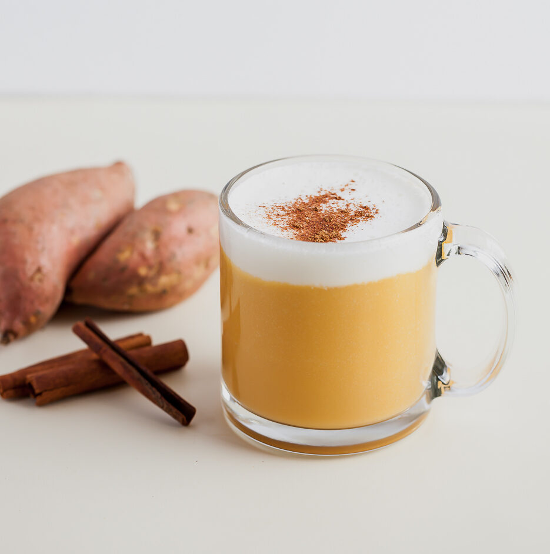

Sweet potato latte.

What is it?
Goguma latte, also known as sweet potato latte, is popular korean drink. It's made by blending roasted or steamed sweet potatoes with milk and a bit of sweetness. I know you might think of coffe as soon as you read latte, but this is not the case since goguma latte does not include coffe in it's ingridients. It can be served in boths ways, warm and chilled.
Ingredients.
Latte.
- Any sweet potato - if you like it sweeter you want to use the purple ones.
- Regular full-fat milk.
- Sugar - adjust the quantity to your taste.
- Shaved almonds - take this as an optional topping ingridient.
- Ground cinnamon - adds depth and for me, personally, it's crucial.
Cheese foam.
- Regular full-fat milk.
- Whipping cream.
- Cream cheese.
- Sugar.
How to make it.
- Preheat the oven to 220°c.
- Poke several holes in the sweet potato, using a fork, to allow steam to scape.
- Bake the sweet potato in the preheated oven for about 45 minutes.
- Once it's cooked and cooled, peel it off.
- In a blender, combine the cooked sweet potato, milk and sugar. Blend it until the mixture is smooth and creamy.
- Pour the blended mixture into a pot and heat ir over medium-high heat until it' warmed through.
- Prepare the cheese foam. Using a hand mixer, beat together the cream cheese, whipping cream, milk and sugar.
- Top the latte with the foam.
- Sprinkle a pinch of ground cinnamon and a few shreds of the shaved almonds.
- Enjoy.